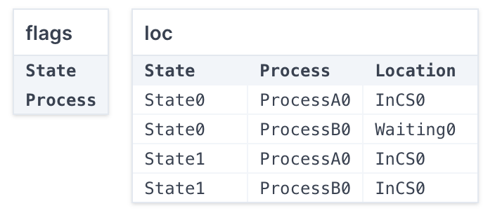

More Sets and Induction (Mutual Exclusion)¶
If you have two independent threads of execution running concurrently, many subtle bugs can manifest. For instance, if both threads can write to the same region of memory, they might overlap their writes. A great example of this is simply incrementing a counter. In most computer systems, an operation like:
is not atomic by itself. Thus, the following sequence of operations would be problematic:
- Thread 1: read the current value of
counter - Thread 2: read the current value of
counter - Thread 1: add
1to that value - Thread 1: write the new value to
counter - Thread 2: add
1to that value - Thread 2: write the new value to
counterbecause then the counter's value is only1higher than its original value.
We often call the property that such traces can't exist mutual exclusion, and the piece of code that shouldn't ever be run by 2 threads at once the critical section. Today we'll model a very simple approach to mutual-exclusion—which turns out not to work, but is a first step on the way to something that does.
The idea comes from how we as humans negotiate access to a shared resource like the spoken-communication channel in a meeting. If we want to talk, we raise our hand.
A Simplified Mutual-Exclusion Algorithm¶
Consider the pseudocode below, and imagine it running on two separate threads of execution. I've marked program locations in square brackets---note how they correspond to the spaces in between lines of code executing.
while(true) {
// [state: uninterested]
this.flag = true;
// [state: waiting]
while(other.flag == true);
// [state: in-cs]
run_critical_section_code(); // does whatever; we don't care about details
this.flag = false;
}
Both processes will always continuously try to access the critical section. When they become interested, they set a public flag bit to true. Then, they don't enter until their counterpart's flag is false. When they're done executing the critical section, they lower their flag and restart.
Notice we aren't modeling the critical section itself. The exact nature of that code doesn't matter for our purposes; we just want to see whether both process can be at the in-cs location at once. If so, mutual exclusion fails!
Modeling¶
Let's start with a simple model. We'll critique this model as the semester progresses, but this will be useful enough to get us started.
abstract sig Location {}
one sig Uninterested, Waiting, InCS extends Location {}
abstract sig Process {}
one sig ProcessA, ProcessB extends Process {}
sig State {
loc: func Process -> Location,
flags: set Process
}
An initial state is one where all processes are uninterested, and no process has raised its flag:
We then have three different transition predicates, each corresponding to one of the lines of code above, and a transition predicate delta that represents any currently-possible transition:
pred raise[pre: State, p: Process, post: State] {
pre.loc[p] = Uninterested
post.loc[p] = Waiting
post.flags = pre.flags + p
all p2: Process - p | post.loc[p2] = pre.loc[p2]
}
pred enter[pre: State, p: Process, post: State] {
pre.loc[p] = Waiting
pre.flags in p -- no other processes have their flag raised
post.loc[p] = InCS
post.flags = pre.flags
all p2: Process - p | post.loc[p2] = pre.loc[p2]
}
pred leave[pre: State, p: Process, post: State] {
pre.loc[p] = InCS
post.loc[p] = Uninterested
post.flags = pre.flags - p
all p2: Process - p | post.loc[p2] = pre.loc[p2]
}
-- the keyword "transition" is reserved
pred delta[pre: State, post: State] {
some p: Process |
raise[pre, p, post] or
enter[pre, p, post] or
leave[pre, p, post]
}
We won't create a Trace sig or traces predicate at all, because we're going to apply induction rather than trace generation.
Model Validation¶
We should do some quick validation at this point. The most basic would be checking that each of our transitions is satisfiable:
test expect {
canEnter: {
some p: Process, pre, post: State | enter[pre, p, post]
} is sat
canRaise: {
some p: Process, pre, post: State | raise[pre, p, post]
} is sat
canLeave: {
some p: Process, pre, post: State | leave[pre, p, post]
} is sat
}
In a real modeling situation, we would absolutely add more checks. Even here, we might regret not testing more...
Does Mutual Exclusion Hold?¶
Before we run Forge, ask yourself whether the algorithm above guarantees mutual exclusion. (It certainly has another kind of error, but we'll get to that later. Focus on this one property for now.)
It seems reasonable that the property holds. But if we try to use the inductive approach to prove that:
pred good[s: State] {
#{p: Process | s.loc[p] = InCS} <= 1
}
pred startGoodTransition[s1, s2: State] {
good[s1]
delta[s1,s2]
}
assert all s: State | init[s] is sufficient for good[s] for exactly 1 State
assert all pre, post: State | startGoodTransition[pre, post] is sufficient for good[post] for exactly 2 State
The inductive case fails. Let's see what the counterexample is:
run {
not {
all pre, post: State |
delta[pre, post] and good[pre] implies good[post]
}
} for exactly 2 State
Yields, in the table view:

Notice that neither process has raised its flag in either state. This seems suspicious, and might remind you of the binary-search model, where the good predicate wasn't strong enough to be inductive, but the counterexample Forge found wasn't actually reachable. This is another such situation.
Refresher: Enriching The Invariant¶
This counterexample shows that the property we wrote isn't inductive. But it might still an invariant of the system—it's just that Forge has found an unreachable prestate. To prevent that, we'll add more conditions to the good predicate (recall: we call this enriching the invariant; it's a great demo of something apparently paradoxical: proving something stronger can be easier). Let's also say that, in order for a process to be in the critical section, its flag needs to be true:
pred good2[s: State] {
-- enrichment: if in CS, flag must be raised
all p: Process | s.loc[p] = InCS implies p in s.flags
-- original: mutual exclusion
#{p: Process | s.loc[p] = InCS} <= 1
}
We re-run this, and the inductive case still fails! Look closely at the counterexample. The problem now is that the flag also has to be raised if a process is Waiting.
pred good3[s: State] {
-- enrichment: if in CS or Waiting, flag must be raised
all p: Process | (s.loc[p] = InCS or s.loc[p] = Waiting) implies p in s.flags
-- original: mutual exclusion
#{p: Process | s.loc[p] = InCS} <= 1
}
What are changing?
Notice again that we're only strengthening the thing we're trying to prove---not altering the model itself in any way.
At this point, the inductive check passes. We've just shown that this algorithm satisfies mutual exclusion. It might not give us some other properties we want, but this one is guaranteed.
Validating the Check¶
We should probably make sure the two proof steps (the base case and the inductive step) aren't passing vacuously:
test expect {
baseCaseVacuity: {
some s: State | init[s] and good1[s]
} for exactly 1 State is sat
inductiveCaseVacuity: {
some pre, post: State |
delta[pre, post] and good3[pre]
} for exactly 2 State is sat
}
Fortunately, these both pass. So far, so good. But does this algorithm do everything we want?